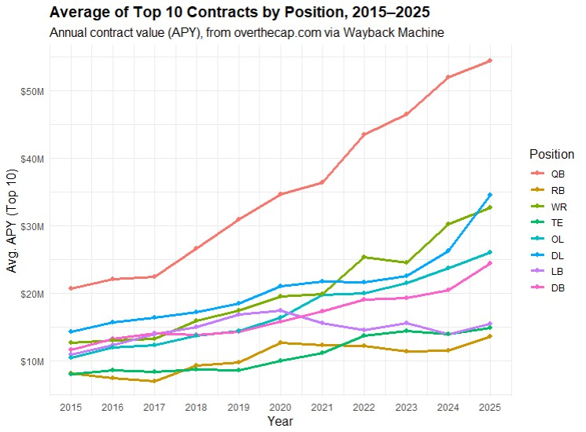

The NFL is unique from nearly every other sports league in its method of creating competitive balance. While leagues like the MLB allow teams to spend however much they want to on players, the NFL limits it to a specific monetary amount each year, a salary cap. The NBA also has one, but unlike the NBA's, the NFL's salary cap isn't just a suggestion. If teams end up above it, the league will fine the team up to $5,000,000, cancel player contracts, and strip draft picks. It's serious business, and teams put hundreds of hours into deciding how to best allocate the limited funds.
The salary cap increases each year with general inflation and increased league revenue, but that's not enough to make the job easy on NFL teams. Star NFL players and major contributors demand contracts of higher and higher value each year, with each all-pro wanting to become the highest paid player at thier position come contract time. Players like Patrick Mahomes, Dak Prescott, and Micah Parsons each reset their respective positional markets this decade with record-breaking contracts annual value wise.
Photo credits: Sports Illustrated
As organization decision making has become more analytics driven in the last decade, teams have started spending more money on certain positions and less on others. A position for which top contracts have skytocketed is the Quarterback position, considered to be the most important on the field. I spoke with Falk College professor of Sport Analytics Dr. Jeremy Losak about this, and he said that there are culminating factors of quarterbacks being at the center of every offensive play and "also having the biggest egos" a lot of the time that lead to them receivng the most money. Without a high-level quarterback running your offense, you don't have much of a chance.
Visualization created in Knightlab
As mentioned, not all positions have seen the same exponential pay increase. Others, like running backs and linebackers, have actually seen mean salaries decrease over stretches of years in the last decade. Dr. Losak mentioned that running backs especially have gotten the short end of the stick recently, as teams have began to think of them as replaceable and many teams have opted to draft a young running back instead of signing one to a high annual value extention. As the chart below shows, quarterbacks, wide receivers, and defensive linemen have claimed most of the largest contract in the league in recent years, while running backs now receive the least of any major positional group.

Visualization created in RStudio Desktop
As the league continues to develop, it will be interesting to see if these trends of increasing contract disparity among positions perpetuate. As it stands now, one can only believe that quarterbacks will make $100 million a year before a running back makes a fifth of that, but only time will tell.